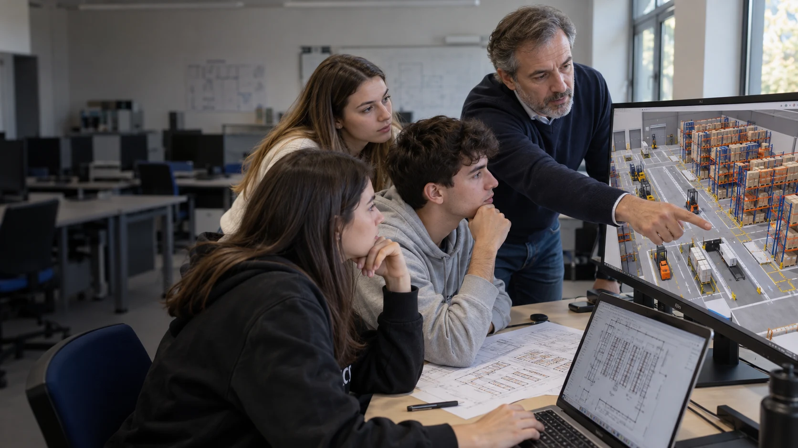

Progettazione dello spazio
Definisci le dimensioni e posiziona scaffalature, banchi e aree operative nella pianta.

UN LABORATORIO DIDATTICO, NEL BROWSER
Un laboratorio didattico in 3D per lo studio degli spazi,
dei flussi di merce e delle operazioni di magazzino.
IL LABORATORIO DIGITALE
Il docente propone un’esercitazione e guida gli studenti nell’organizzazione degli spazi e dei flussi di merce. Si parte dalla pianta, si osserva il magazzino in 3D e si confrontano le scelte: disposizione degli scaffali, percorsi di pedoni e mezzi, ricevimento e spedizione.
Definisci le dimensioni e posiziona scaffalature, banchi e aree operative nella pianta.
Osserva i flussi dal ricevimento alla spedizione. Nella simulazione, segui le operazioni di entrata e uscita della merce.
Controlla ingombri e interferenze, modifica il layout ed esporta il progetto per discuterlo in classe.
Scegli una pianta vuota, un template da modificare o una simulazione guidata dei flussi.

Imposta le misure di un magazzino vuoto e organizza il layout in 2D e 3D.
Crea un magazzino ↗
Apri uno scenario già allestito e adatta spazi, attrezzature e percorsi.
Sfoglia i template ↗
Segui sette tappe dal ricevimento alla spedizione: operazioni, controlli e quantità.
Apri il simulatore ↗Accedi per salvare i magazzini nel tuo archivio online. Puoi anche lavorare sul dispositivo e aprire o esportare un file progetto.